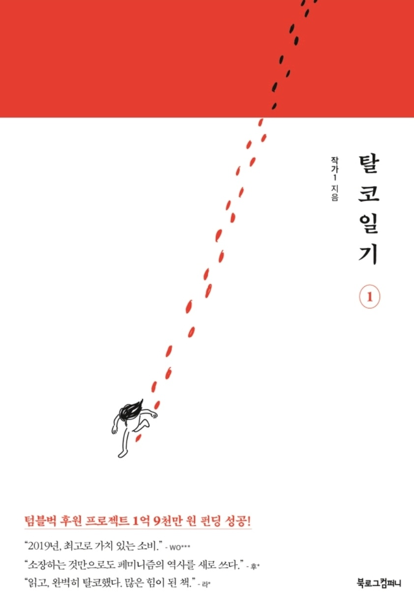

| 작가일의 작품 | |
| 탈코일기 | B의 일기 |
탈코일기 Escape the Corset | |
 | |
| 작가 | 작가일인스타그램 |
| 장르 | 드라마, 여성서사 |
| 플랫폼 | 다음 카페 올뺌 트위터 바로가기 영문판 트위터 바로가기 카카오페이지 바로가기 |
탈코일기는 카페 커뮤니티를 중심으로 트위터, 인스타그램 등의 타 SNS 플랫폼으로도 확산되어 큰 인기를 누린 페미니즘과 탈코르셋을 다룬 만화 작품이다.
2018년 봄부터 다음 카페 올뺌에서 연재되었던 웹툰이다.
텀블벅을 통해 후원액을 모금받았으며, 텀블벅 내 최대 후원 퍼센트를 기록하여 정식으로 출간되었다.
탈코 이후 복싱을 배우기 시작한 페미니스트 여성. 복싱 학원에서 본 '숏컷 여성' 수리를 보고 페미니스트 지인을 갖고 싶다는 마음을 키운다 자매님 하이루!? . 친구인 로아와 코르셋 문제로 부딪히기 시작하면서부터다.
비혼 페미니스트 여성. 수리에게 사회적 여성성을 강요하고 정서적 학대와 폭력을 자행하던 가족들에게서 벗어나 스스로 삶을 가꾸고 있다. 가정폭력을 일삼던 부친에 저항도 해보았지만 돌아오는 건 왜 아버지에게 대드냐는 모친의 질책이었다.
뱀희의 친구. 남자친구를 사귀고 있으며, 꾸미는 것을 좋아한다. 친구인 뱀희가 탈코르셋을 하고 로아는 직면하기 싫었던 몇 가지 중요한 사실들을 직면해야 할 필요를 느낀다.
우리에겐 발을 기형으로 만들 자유가 있었고, 허리를 얇게 만들기 위해 갈비뼈를 뺄 자유가 있었다.
우리는 항상 안 예쁠 자유가 없는 곳에서 예쁠 자유를 먼저 찾는다.
아주 잠깐 동안 슬퍼하고, 오래 분노하라.
그 분노는 개인의 혁명이자, 너의 시작이 되니. 행동의 파장이 거셀수록 안심하라.